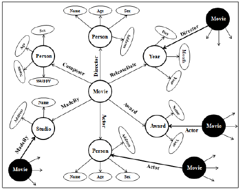

Everything is an ing
The ing is symbolically represented as the unification of Better and Worse (>+< = ᛝ). Thus the ING can also be referred to colloquially as the BetterWorse.
No matter how far you zoom into the quantum soup, the smallest thing you will find is still a thing.
ings are the building blocks of things.
If you zoom out into multi-dimensional space and find the highest possible point of perspective - that perspective which encapsulates literally everything - I call that the ᛝ ING ᛝ.
I’m not here to debate theoretical theology but I imagine the ᛝINGᛝ to be the highest point of the “godhead”.
It’s ings all the way down and all the way up.
The purpose of the Ingter Net Graph is to map the interconnectedness of every thing.
Most ings and Ings will be focused only on things relevant to themself, but in understanding the ING, it is best to look at the EVERY ING.
The ING is composed of ings, things, and strings. An ing is the abstract concept of a thing.
A String is a line between things - symbolizing a relationship.
There can be as many different types of strings as there are ings.
Ings are like subreddits, only better because they are more general.
r/memes does not actually contain a link to every known meme.
The meme-ing is not a meme but rather the abstract concept of memes. Any thing on the internet which is considered a meme will have a string tying it to the meme-ing.
ings don’t actually exist - they are the abstract concept of themselves.
For example, the `gangnam style` ing is not the song gangnam style but the abstract concept of gangnam style. Every thing which has any ing to do with `gangnam style` will have a string connecting the two together.
ings can be thought of as “spiritual objects” with invisible strings drawing the relationship between that ing and every other ing it has a relationship with.